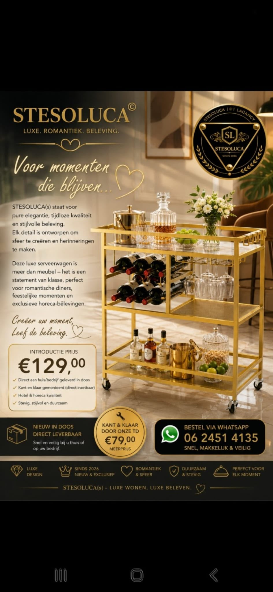

02 · Our Story
Made for the
memorable.
Een ode aan de kunst van aandacht geven — aan een ruimte, aan een tafel, aan elkaar.
A quiet beginning
Een naam met
een belofte.
STESOLUCA begint niet met een object, maar met een gevoel: de warmte van een ruimte die precies klopt. Onze wereld wordt gevormd door de liefde voor tijdloze schoonheid en de overtuiging dat gastvrijheid een vorm van kunst is.
Daarom kiezen we voor karaktervolle details, materialen met diepte en een sfeer die de tijd even zachter laat lopen.

Observe
We verzamelen de details die een ruimte persoonlijk maken.
Compose
We combineren klassiek ritme met een hedendaagse zachtheid.
Reveal
We laten precies genoeg zien om de verbeelding aan te zetten.
The STESOLUCA way
Classic at heart.
Unmistakably now.
De collectie wordt stap voor stap onthuld. Voor nu nodigen we u uit om de signatuur te voelen.